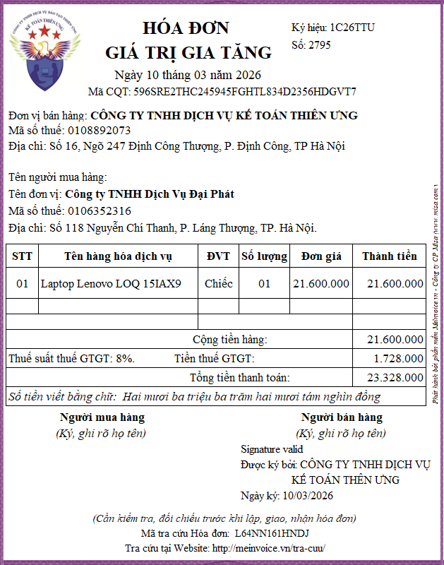
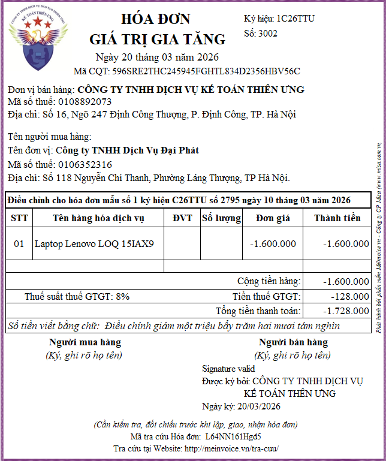

Hướng dẫn cách xử lý hóa đơn điện tử viết sai mã số thuế, đơn giá, số lượng, đơn vị tính, thành tiền, thuế suất, tiền thuế, tổng thanh toán... mới nhất năm 2026 theo Nghị định 70/2025/NĐ-CP
Căn cứ pháp lý hướng dẫn xử lý hóa đơn khi có sai sót:
+ Nghị định 70/2025/NĐ-CP sửa đổi Nghị định 123/2020/NĐ-CP quy định về hóa đơn, chứng từ.
+ Thông tư 32/2025/TT-BTC hướng dẫn thực hiện một số điều của Luật Quản lý thuế 2019, Nghị định 123/2020/NĐ-CP quy định về hóa đơn, chứng từ, Nghị định 70/2025/NĐ-CP sửa đổi, bổ sung một số điều của Nghị định 123/2020/NĐ-CP.
Dưới đây, Công ty đào tạo Kế Toán Diệu Tâm sẽ hướng dẫn các bạn cách xử lý hóa đơn có mã của cơ quan thuế khi có sai sót
Còn cách xử lý hóa đơn không có mã của cơ quan thuế khi có sai sót thì các bạn lòng xem chi tiết tại đây:
Xử lý hóa đơn điện tử không có mã của cơ quan thuế bị sai sót
1. Hóa đơn điện tử chỉ bị sai tên, địa chỉ của người mua:
Trường hợp có sai về tên, địa chỉ của người mua nhưng không sai mã số thuế, các nội dung khác không sai thì thực hiện xử lý như sau:
+ Bước 1: Người bán thông báo cho người mua về việc hóa đơn đã lập sai và không phải lập lại hóa đơn.
+ Bước 2: Người bán thực hiện thông báo với cơ quan thuế về hóa đơn điện tử đã lập sai theo Mẫu số 04/SS-HĐĐT Phụ lục IA ban hành kèm theo Nghị định 70/2025/NĐ-CP.
Lưu ý: đây là trường hợp có sai về tên, địa chỉ của người mua nhưng không sai mã số thuế, các nội dung khác không sai
Còn đặt trong trường hợp hóa đơn bị sai về tên, địa chỉ của người mua và sai cả mã số thuế hoặc ngoài việc sai tên địa chỉ của người mua thì các nội dung khác cũng sai thì người bán phải dùng hóa đơn điều chỉnh hoặc hoặc hóa đơn thay thế để xử lý (Chi tiết thực hiện như mục 2 nhỏ dưới đây)
2. Trường hợp có sai: mã số thuế; sai về số tiền ghi trên hóa đơn, sai về thuế suất, tiền thuế hoặc hàng hóa ghi trên hóa đơn không đúng quy cách, chất lượng
thì có thể lựa chọn điều chỉnh hoặc thay thế hóa đơn điện tử như sau:
Cách 1: Người bán lập hóa đơn điện tử điều chỉnh hóa đơn đã lập sai.
Hóa đơn điện tử điều chỉnh hóa đơn điện tử đã lập sai phải có dòng chữ “Điều chỉnh cho hóa đơn Mẫu số... ký hiệu... số... ngày... tháng... năm”.
Khi điều chỉnh thì:
+ Điều chỉnh tăng: ghi dấu dương
+ Điều chỉnh giảm: ghi dấu âm
=> Các sai sót về giá trị như: số lượng, đơn giá, thành tiền, thuế suất, tiền thuế, tổng thanh toán
+ Nếu sai cao hơn => Phải lập hóa đơn điều chỉnh giảm
Ví dụ: đơn giá đúng là: 10.000.000. Nhưng ghi sai thành 11.000.000
=> Cần lập hóa đơn điều chỉnh giảm:
Khi lập hóa đơn tại cột đơn giá sẽ ghi phần chênh lệch là: -1.000.000
(Điều chỉnh giảm thì ghi dấu âm: 10.000.000 – 11.000.000 = -1.000.000)
+ Nếu sai thấp hơn => Phải lập hóa đơn điều chỉnh tăng
Ví dụ: Đơn giá đúng là: 5.400.000 Nhưng ghi sai thành 4.500.000
=> Cần lập hóa đơn điều chỉnh tăng:
Khi lập hóa đơn tại cột đơn giá sẽ ghi phần chênh lệch là: 900.000
(Điều chỉnh tăng ghi dấu dương: 5.400.000 - 4.500.000 = 900.000)
Lưu ý khi điều chỉnh hóa đơn: Nếu sai 1 chỉ tiêu nào đó mà dẫn đến sai các chỉ tiêu khác thì thực hiện điều chỉnh cả những chỉ tiêu bị sai liên đới đó
Ví dụ: Sai thuế suất thuế GTGT dẫn tới sai cả tiền thuế GTGT và tổng thanh toán thì khi điều chỉnh hóa đơn sẽ thực hiện điều chỉnh cả thuế suất, tiền thuế và tổng thanh toán
=> Sau khi lập hóa đơn điều chỉnh xong thì thực hiện: Ký số -> Gửi cho CQT để cấp mã -> Gửi cho người mua.
Cách 2: Người bán lập hóa đơn điện tử mới thay thế cho hóa đơn điện tử lập sai.
Hóa đơn điện tử mới thay thế hóa đơn điện tử đã lập sai phải có dòng chữ “Thay thế cho hóa đơn Mẫu số... ký hiệu... số... ngày... tháng... năm”.
=> Sau khi lập hóa đơn thay thế xong thì thực hiện: Ký số -> Gửi cho CQT để cấp mã -> Gửi cho người mua.
Lưu ý: Trước khi điều chỉnh/thay thế hóa đơn theo Nghị định 70/2025/NĐ-CP thì phải lập biên bản thỏa thuận hoặc thông báo cho người mua
+ Đối với trường hợp người mua là doanh nghiệp, tổ chức kinh tế, tổ chức khác, hộ kinh doanh, cá nhân kinh doanh thì người bán và người mua phải lập văn bản thỏa thuận ghi rõ nội dung sai;
+ Đối với trường hợp người mua là cá nhân thì người bán phải thông báo cho người mua hoặc thông báo trên website của người bán (nếu có).
Người bán thực hiện lưu giữ văn bản thỏa thuận tại đơn vị và xuất trình khi có yêu cầu.
Dưới đây, Công ty đào tạo Kế Toán Diệu Tâm sẽ đưa ra 1 tình huống cụ thể để hướng dẫn các bạn cách xử lý hóa đơn điện tử viết sai theo quy định mới tại nhất năm 2026 Nghị định 70/2025/NĐ-CP và thông tư 32/2025/TT-BTC:
Ngày 10/03/2026, Công ty Kế Toán Diệu Tâm bán Laptop cho công ty Đại Phát, thỏa thuận như sau:
+ Tên hàng hóa: Laptop Lenovo LOQ 15IAX9
+ Số lượng: 1 chiếc
+ Đơn giá: 21.600.000đ (đã bao gồm thuế GTGT 8%)
Khi bàn giao hàng, Công ty Diệu Tâm đã xuất hóa đơn cho công ty Đại Phát như sau: 
Đến ngày 20/03/2026, Công ty Diệu Tâm đã phát hiện ra hóa đơn điện tử số 2795 bị sai đơn giá
Cụ thể như sau:
Vì Công Ty Diệu Tâm sử dụng loại hóa đơn là hóa đơn giá trị gia tăng nên tại cột đơn giá sẽ ghi giá chưa bao gồm thuế GTGT
Mà theo thỏa thuận khi mua bán hàng thì: Đơn giá 21.600.000đ là đơn giá đã bao gồm thuế GTGT 8%
=> Phải tách thuế GTGT ra khỏi đơn giá này để ghi đơn giá lên hóa đơn GTGT:
Đơn giá chưa bao gồm thuế GTGT 8% = Đơn giá đã bao gồm thuế GTGT / ( 1 + Thuế suất) = 21.600.000 / (1 + 8%) = 20.000.000đ (đây chính là đơn giá đúng để ghi vào cột đơn giá trên hóa đơn GTGT)
Khi đưa sai thông tin về đơn giá đã làm cho các chỉ tiêu khác như thành tiền, cộng tiền hàng, tiền thuế và tổng thanh toán bị sai theo
Cách xử lý hóa đơn điện tử lập sai số 2795 ngày 10/03/2026 như sau:
Vì hóa đơn viết sai số 2795: đã được cấp mã của cơ quan thuế và lỗi sai của hóa đơn là: đơn giá
Nên phải thực hiện xử lý hóa đơn điện tử viết sai số 2795 theo quy định tại Khoản 13 Điều 1 Nghị định 70/2025/NĐ-CP là bằng 1 trong 2 cách: lập hóa đơn điều chỉnh hoặc lập hóa đơn thay thế.
=> Hai bên thống nhất xử lý hóa đơn viết sai số 2795 vào ngày 20/03/2026 bằng hình thức lập hóa đơn điều chỉnh
Cụ thể từng bước như sau:
Bước 1: Người bán và người mua lập văn bản thỏa thuận điều chỉnh hóa đơn:
|
CỘNG HÒA XÃ HỘI CHỦ NGHĨA VIỆT NAM
Độc lập – Tự do – Hạnh phúc ------------------ BIÊN BẢN ĐIỀU CHỈNH HÓA ĐƠN ĐIỆN TỬ CÓ SAI SÓT (Số: 06/2026/BBĐCHĐ-TU-ĐP) Căn cứ vào Nghị định 70/2025/NĐ-CP ngày 20/03/2025 sửa đổi bổ sung Nghị định số 123/2020/NĐ-CP ngày 19 tháng 10 năm 2020 quy định về hoá đơn, chứng từ Hôm nay, ngày 20 tháng 03 năm 2026 hai bên chúng tôi gồm có: Đơn vị bán hàng: CÔNG TY TƯ VẤN MINH PHÚC
Mã số thuế : 0113579246
Địa chỉ : Số 16, Ngõ 247 Định Công, P. Định Công, Tp. Hà Nội. Đại diện: Bà Lê Ngọc Diệp Chức vụ: Giám đốc Đơn vị mua hàng: CÔNG TY CỔ PHẦN ĐẠI PHÁT
Mã số thuế: 0106352316
Địa chỉ: Số 118 Phạm Minh Trí, P. Láng Thượng, TP. Hà Nội. Đại diện: Ông Trần Văn Đại Chức vụ: Giám đốc Hai bên thống nhất lập hóa đơn điều chỉnh cho hoá đơn số 2795 ký hiệu 1C26TTU ngày 10/03/2026
Lý do điều chỉnh: Hóa đơn điện tử viết sai đơn giá dẫn đến sai thành tiền, cộng tiền hàng, tiền thuế và tổng thanh toán
Cụ thể như sau:1. Nội dung đã ghi sai: tại hóa đơn số 2795 ký hiệu 1C26TTU ngày 10/03/2026
2. Nội dung đúng theo thỏa thuận:
3. Hai bên thống nhất điều chỉnh như sau: Do hóa đơn số 2795 ký hiệu 1C26TTU ngày 10/03/2026: đã ghi sai đơn giá, thành tiền, cộng tiền hàng, tiền thuế và tổng thanh toán cao hơn so với thỏa thuận khi mua bán hàng ngày 10/03/2026 Nên bên bán sẽ xuất hóa đơn điều chỉnh vào ngày 20/03/2026 để điều chỉnh giảm đơn giá, thành tiền, cộng tiền hàng tiền thuế và tổng thanh toán như sau:
- Tổng số tiền điều chỉnh là 1.728.000đ này sẽ được vào công nợ phải thu - phải trả của bên bán và bên mua - Căn cứ vào hóa đơn điều chỉnh, bên bán và bên mua thực hiện kê khai hạch toán theo quy định. - Biên bản được lập thành 02 (hai) bản, mỗi bên giữ 01 (một) bản, có giá trị pháp lý như nhau.
|
Bước 2: Người bán lập hóa đơn điện tử điều chỉnh cho hóa đơn đã lập có sai sót, rồi ký, cấp mã, gửi cho người mua:
Khi lập hóa đơn điều chỉnh bên bán cần thực hiện:
+ Ngày lập hóa đơn điều chỉnh: 20/03/2026
+ Xác định giá trị cần điều chỉnh: Vì đơn giá, thành tiền, cộng tiền hàng, tiền thuế, tổng thanh toán đang ghi sai cao hơn so với thỏa thuận => Nên phải lập hóa đơn điều chỉnh giảm
(Điều chỉnh giảm sẽ ghi dấu âm)
+ Trên hóa đơn điện tử điều chỉnh phải có dòng chữ “Điều chỉnh cho hóa đơn Mẫu số....... ký hiệu …....... số ......... ngày …...... tháng ......... năm ….....”.

3. Cách xử lý hóa đơn giấy hoặc hóa đơn điện tử loại cũ theo thông tư 32/2011/TT-BCT có sai sót khi doanh nghiệp đã chuyển sang sử dụng hóa đơn điện tử loại mới theo Nghị định số 123/2020/NĐ-CP (được sửa đổi, bổ sung tại Nghị định số 70/2025/NĐ-CP) và quy định tại Thông tư 32/2025/TT-BTC:
Thực hiện xử lý theo hướng dẫn tại khoản 8, điều 12 của Thông tư 32/2025/TT-BTC như sau:
Kể từ thời điểm doanh nghiệp, tổ chức, hộ, cá nhân kinh doanh sử dụng hóa đơn điện tử theo quy định tại Nghị định số 123/2020/NĐ-CP (được sửa đổi, bổ sung tại Nghị định số 70/2025/NĐ-CP) và quy định tại Thông tư này, nếu phát hiện hóa đơn đã lập theo quy định tại Nghị định số 51/2010/NĐ-CP ngày 14/5/2010, Nghị định số 04/2014/NĐ-CP ngày 17/01/2014 của Chính phủ và các văn bản hướng dẫn của Bộ Tài chính mà hóa đơn đã lập sai thì:
+ Bước 2: Người bán lập hóa đơn hóa đơn điện tử mới thay thế cho hóa đơn đã lập sai.
Hóa đơn điện tử thay thế hóa đơn đã lập sai phải có dòng chữ “Thay thế cho hóa đơn Mẫu số... ký hiệu... số... ngày... tháng... năm”.
=> Người bán ký số trên hóa đơn điện tử mới thay thế hóa đơn đã lập sai
=> Người bán gửi hóa đơn điện tử mới thay thế cho người mua
4.1. Một hóa đơn chỉ được áp dụng 1 hình thức xử lý sai sót
Theo mục 5 – Áp dụng hóa đơn điều chỉnh, thay thế tại Khoản 13 Điều 1 Nghị định 70/2025/NĐ-CP thì:
Ví dụ: Ngày 01/07/2026, Công ty Kế Toán Diệu Tâm lập hóa đơn số 2000, ký hiệu 1C26TTU khi bán hàng hóa cho công ty Mạnh Đạt (Hóa đơn gốc)
=> Đến ngày 10/07/2026, công ty Diệu Tâm phát hiện ra hóa đơn số 2000, ký hiệu 1C26TTU lập ngày 01/07/2026 bị sai mã số thuế người mua
=> Hai bên thỏa thuận thống nhất lựa chọn: Lập hóa đơn điều chỉnh để xử lý điều chỉnh sai sót trên hóa đơn số 2000, ký hiệu 1C26TTU => Công ty Diệu Tâm đã lập hóa đơn điều chỉnh số 2085, ký hiệu 1C26TTU ngày 20/07/2026 (Hóa đơn điều chỉnh lần 1)
=> Đến ngày 20/07/2026, công ty Bảo An tiếp tục phát hiện ra hóa đơn gốc số 2000, ký hiệu 1C26TTU lập ngày 01/07/2026 bị sai thành tiền, tiền thuế và tổng thanh toán.
=> Do hóa đơn điện tử đã lập có sai sót (hóa đơn gốc số 2000, ký hiệu 1C26TTU ngày 01/07/2026) đã được xử lý theo hình thức lập hóa đơn điều chỉnh nên các lần xử lý tiếp theo người bán sẽ thực hiện theo hình thức đã áp dụng khi xử lý sai sót lần đầu đó là hình thức lập hóa đơn điều chỉnh
=> Công ty Diệu Tâm sẽ lập hóa đơn điều chỉnh lần 2 vào ngày 20/07/2026 để điều chỉnh cho hóa đơn gốc số 2000, ký hiệu 1C26TTU ngày 01/07/2026
=> Sau đó, nếu lại phát hiện hóa đơn số 2000, ký hiệu 1C26TTU tiếp tục có sai sót thì các lần xử lý tiếp theo người bán (công ty Diệu Tâm) sẽ thực hiện theo hình thức đã áp dụng khi xử lý sai sót lần đầu là theo hình thức lập hóa đơn điều chỉnh
4.2. Cách xử lý hóa đơn điều chỉnh/hóa đơn thay thế bị sai sót:
Theo Công văn 1647/TCT-CS ngày 10/5/2023 của Tổng cục Thuế hướng dẫn về việc xử lý hóa đơn điện tử đã lập có sai sót thì:
Trường hợp doanh nghiệp lập hóa đơn điện tử bị sai (gọi là hóa đơn F0), sau đó doanh nghiệp lập hóa đơn điều chỉnh hoặc thay thế (gọi là hóa đơn F1 điều chỉnh/thay thế cho hóa đơn F0) và phát hiện hóa đơn F1 vẫn bị sai thì:
+ Nếu lựa chọn phương pháp thay thế: Doanh nghiệp lập hóa đơn F2 thay thế cho hóa đơn F1 (lúc này hóa đơn F0 đã bị thay thế bởi hóa đơn F1).
4.3. Về thuế suất thuế GTGT trên hóa đơn điều chỉnh/hóa đơn thay thế đối với các mặt hàng được giảm thuế GTGT
Trường hợp hàng hóa, dịch vụ thuộc đối tượng được giảm thuế GTGT đã bán -> đã xuất hóa đơn theo mức thuế suất được giảm (8%) theo quy định tại thời điểm bán => Rồi sau đó phát hiện hóa đơn đã lập đó có sai sót -> phải lập hóa đơn điều chỉnh hoặc thay thế thì khi lập hóa đơn điều chỉnh hoặc thay thế thì cần xác định như sau:
* Trường hợp 1: Nếu thời điểm lập hóa đơn điều chỉnh hoặc thay thế vẫn còn trong thời hạn được giảm thuế GTGT => Trên hóa đơn điều chỉnh hoặc thay thế sẽ ghi theo mức thuế suất được giảm là 8%
* Trường hợp 2: Nếu thời điểm lập hóa đơn điều chỉnh hoặc thay thế KHÔNG còn trong thời hạn được giảm thuế GTGT nữa thì xác định theo các lỗi sai như sau:
+ Trường hợp sai sót về số lượng hàng hóa dẫn đến sai sót về tiền hàng và thuế GTGT thì hóa đơn điều chỉnh hoặc thay thế áp dụng thuế suất thuế GTGT theo quy định tại thời điểm lập hóa đơn điều chỉnh hoặc thay thế.
4.4. Điều chỉnh hoặc thay thế cho nhiều hóa đơn điện tử đã lập sai
Trường hợp trong tháng người bán đã lập sai cùng thông tin về người mua, tên hàng, đơn giá, thuế suất trên nhiều hóa đơn của cùng một người mua trong cùng tháng thì người bán được lập một hóa đơn điều chỉnh hoặc thay thế cho nhiều hóa đơn điện tử đã lập sai trong cùng tháng và đính kèm bảng kê các hóa đơn điện tử đã lập sai theo Mẫu số 01/BK-ĐCTT Phụ lục IA ban hành kèm theo Nghị định 70/2025/NĐ-CP.
4.5. Trường hợp cơ quan thuế phát hiện hóa đơn điện tử có mã của cơ quan thuế hoặc hóa đơn điện tử không có mã của cơ quan thuế đã lập sai thì cơ quan thuế thông báo cho người bán theo Mẫu số 01/TB-RSĐT Phụ lục IB ban hành kèm theo Nghị định 70/2025/NĐ-CP để người bán kiểm tra nội dung sai.
Người bán có trách nhiệm rà soát theo thông báo của cơ quan thuế và thực hiện điều chỉnh, thay thế hóa đơn.
4.6. Đối với các hóa đơn điện tử đã lập khi bán hàng hóa, cung cấp dịch vụ không bị sai nhưng khi thanh toán thực tế hoặc khi quyết toán có sự thay đổi về giá trị, khối lượng trên cơ sở kết luận của cơ quan nhà nước có thẩm quyền theo quy định của pháp luật có liên quan thì người bán thực hiện lập hóa đơn điện tử mới đối với số chênh lệch qua quyết toán phản ánh theo đúng nghiệp vụ kinh tế phát sinh (phát sinh giảm ghi âm (-) hoặc phát sinh tăng ghi dương (+) phù hợp với thực tế).
4.7. Đối với ngành hàng không thì hóa đơn đổi, hoàn chứng từ vận chuyển hàng không được coi là hóa đơn điều chỉnh mà không cần có thông tin “Điều chỉnh tăng/giảm cho hóa đơn Mẫu số... ký hiệu... ngày... tháng... năm”.
Doanh nghiệp vận chuyển hàng không được phép xuất hóa đơn của mình cho các trường hợp hoàn, đổi chứng từ vận chuyển do đại lý xuất.
4.8. Cách kê khai hóa đơn điều chỉnh/thay thế cho hóa đơn có sai sót:
Theo Khoản 13 Điều 1 Nghị định 70/2025/NĐ-CP thì:
“Điều 19. Thay thế, điều chỉnh hóa đơn điện tử
1. Trường hợp phát hiện hóa đơn điện tử đã lập sai (bao gồm hóa đơn điện tử đã được cấp mã của cơ quan thuế, hóa đơn điện tử không có mã của cơ quan thuế đã gửi dữ liệu đến cơ quan thuế) thì người bán thực hiện xử lý như sau:
………..
b) Trường hợp có sai: mã số thuế; sai về số tiền ghi trên hóa đơn, sai về thuế suất, tiền thuế hoặc hàng hóa ghi trên hóa đơn không đúng quy cách, chất lượng thì có thể lựa chọn điều chỉnh hoặc thay thế hóa đơn điện tử như sau:
b.1) Người bán lập hóa đơn điện tử điều chỉnh hóa đơn đã lập sai.
…….
b.2) Người bán lập hóa đơn điện tử mới thay thế cho hóa đơn điện tử lập sai.
………….
5. Áp dụng hóa đơn điều chỉnh, thay thế
d) Hóa đơn điều chỉnh, hóa đơn thay thế đối với trường hợp quy định tại điểm b khoản 1 Điều này thì người bán, người mua khai bổ sung vào kỳ phát sinh hóa đơn bị điều chỉnh, bị thay thế;
==========================
------------------------------------------------------------
-------------------------------------------------------------